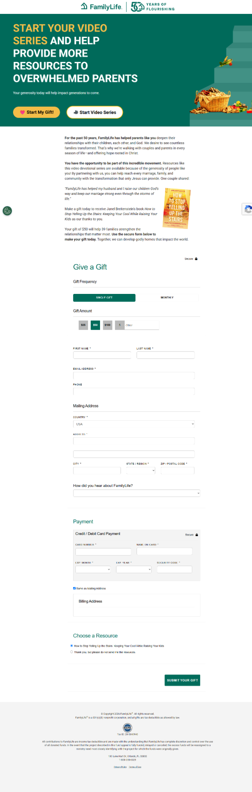

FamilyLife · Content Experience
How to Stop Yelling Up the Stairs
Using a Figma design file, I created a content offer page with follow-up video pages for email and a donation page. The work combined content presentation, responsive implementation and conversion-focused page structure.